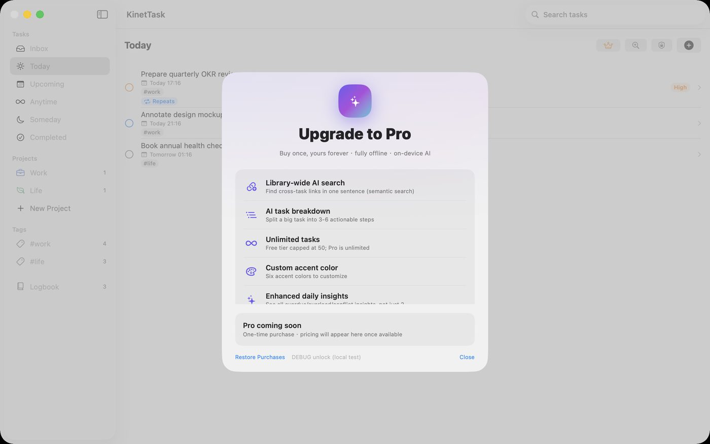
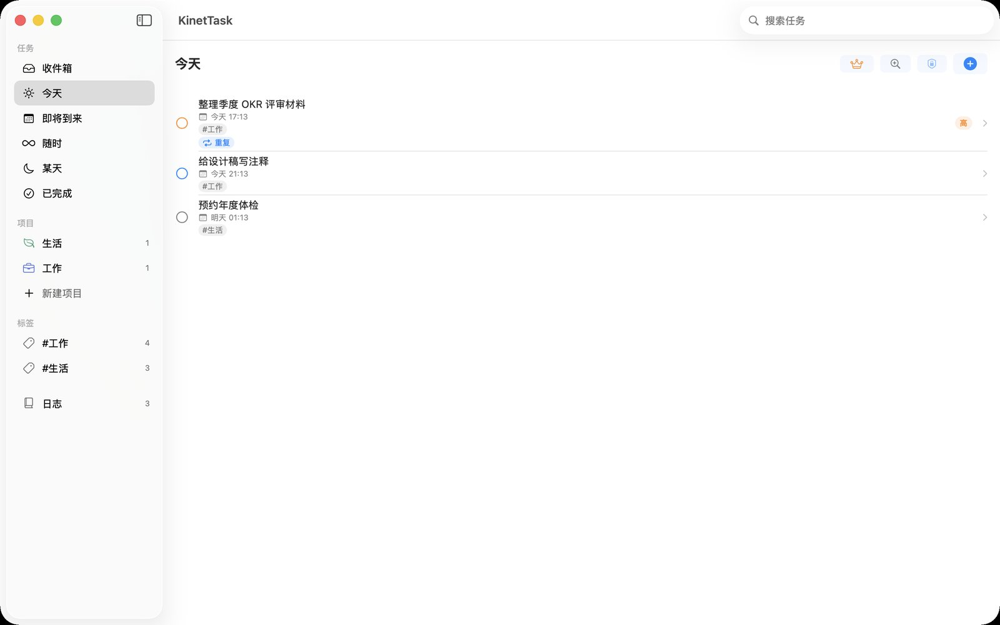
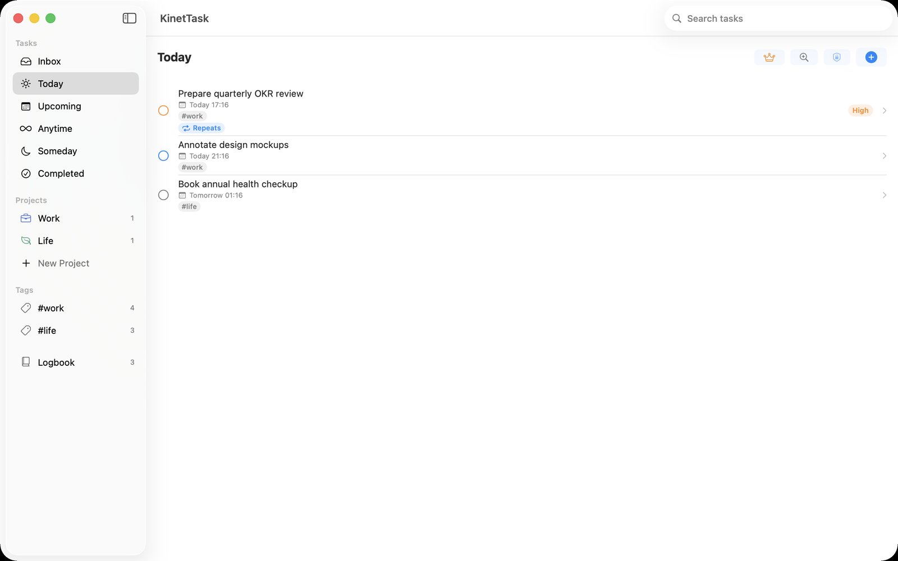
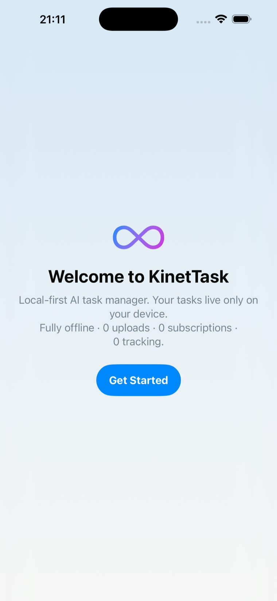

让你的任务库
真正懂你
KinetTask 是一款本地优先的 AI 任务管理器。一句话变任务, Apple Foundation Models 设备端推理, 0 上传 0 追踪。比 Reminders 聪明, 比 Todoist 私密, 比 Things 懂你。
今天
🔍说一句话, 它替你想好
不用填表单, 不用挑日期。KinetTask 在你的设备上读懂自然语言, 自动拆出标题、截止时间、优先级和标签。
聪明、私密、清爽
该有的都有, 不该有的(云端、追踪、订阅)一个没有。
设备端 AI 推理
macOS 26 / iOS 26 用 Apple Foundation Models, 零下载零配置; 其他设备跑你选的本地模型; 都没有就用内置规则解析。全程不离设备。
每日洞察
扫描整个任务库, 主动提醒逾期、今天/明天过载、时间冲突、重要却没排期。从"记录"升级到"理解"。
0 上传 · 可证明
任务存在本地 SQLite, 无 analytics、无 crash reporter、无第三方追踪。App 内置隐私审计面板, 落点一目了然。
全文搜索
FTS5 驱动的实时搜索, 跨标题、备注、标签。输入即出结果, unicode 分词对中文友好。
项目分类
Things 式 Areas。侧栏浏览项目、看任务数、新建删除, 按工作 / 个人 / 学习归类。
iPhone + Mac
一套代码双端, SwiftUI 原生体验。自适应布局, 手机电脑都顺手。
永远点亮, 永不离线
按设备能力自动降级, 但规则兜底保证"一句话变任务"在任何机器上都成立。
Apple Foundation Models 首选
macOS 26 / iOS 26 系统内置, 0 下载, 进程内推理。
本地 GGUF 模型
其他能跑的设备: 下载你选的 GGUF, 进程内 Llama.cpp 推理。
规则解析 永远兜底
零依赖正则引擎, 读懂中文日期、时段、优先级、标签。无需任何模型。

三层引擎怎么工作
- 1macOS 26 / iOS 26 · 直接调用系统内置的 Apple Foundation Models,零下载零配置,推理不出进程
- 2其他设备 · 在设置里下载你选的 GGUF 模型,Llama.cpp 进程内跑,依旧不联网
- 3无模型可跑 · 内置规则解析兜底 —— "明天下午3点开会"照拆不误,AI 永远点得亮
你的任务, 只在你口袋里
KinetTask 没有服务器。你的待办内容从不离开设备 —— 不是写在隐私政策里的漂亮话, 是用沙盒权限 + 仅设备端引擎 + 零第三方 SDK三重保证的。你可以亲眼看见数据落点, 甚至抓包验证。
无分析 SDK
不接任何 analytics、不埋点、不上报使用数据。
本地 SQLite
所有任务、搜索索引、项目都在你硬盘的 Application Support 里。
仅设备端引擎
App Store 版只提供 Apple FM / 本地 GGUF, 没有远端 LLM。
又聪明, 又私密
其他 app 各占一格 —— Reminders 聪明但要上云, Things 私密但不会 AI, Todoist 强大但靠你的数据养模型。KinetTask 占那个空白的交集。
Things 式 六段状态
不做花里胡哨。点一下完成, 划一下删除, 点一下编辑。该克制的地方克制。

你大概想问的
数据真的不上传吗?
跟免费的 Apple Reminders 比, 凭什么?
没有网络 / 没 Apple FM 的设备能用吗?
是免费的吗?
支持哪些设备?
任务会丢吗?
原生双端, 同一套任务库
SwiftUI 原生构建, 不是 Electron 套壳。手机捕获, 电脑深加工 —— 数据在你设备上, 从不联网。


讓你的任務庫
真正懂你
KinetTask 是一款本地優先的 AI 任務管理器。一句話變任務, Apple Foundation Models 設備端推理, 0 上傳 0 追蹤。比 Reminders 聰明, 比 Todoist 私密, 比 Things 懂你。
今天
🔍說一句話, 它替你想好
不用填表單, 不用挑日期。KinetTask 在你的設備上讀懂自然語言, 自動拆出標題、截止時間、優先級和標籤。
聰明、私密、清爽
該有的都有, 不該有的(雲端、追蹤、訂閱)一個沒有。
設備端 AI 推理
macOS 26 / iOS 26 用 Apple Foundation Models, 零下載零設定; 其他設備跑你選的本地模型; 都沒有就用內建規則解析。全程不離設備。
每日洞察
掃描整個任務庫, 主動提醒逾期、今天/明天過載、時間衝突、重要卻沒排期。從「記錄」升級到「理解」。
0 上傳 · 可證明
任務存在本地 SQLite, 無 analytics、無 crash reporter、無第三方追蹤。App 內建隱私稽核面板, 落點一目了然。
全文搜尋
FTS5 驅動的即時搜尋, 跨標題、備註、標籤。輸入即出結果, unicode 分詞對中文友善。
專案分類
Things 式 Areas。側欄瀏覽專案、看任務數、新增刪除, 按工作 / 個人 / 學習歸類。
iPhone + Mac
一套程式碼雙端, SwiftUI 原生體驗。自適應佈局, 手機電腦都順手。
永遠點亮, 永不離線
按設備能力自動降級, 但規則兜底保證「一句話變任務」在任何機器上都成立。
Apple Foundation Models 首選
macOS 26 / iOS 26 系統內建, 0 下載, 行程內推理。
本地 GGUF 模型
其他能跑的設備: 下載你選的 GGUF, 行程內 Llama.cpp 推理。
規則解析 永遠兜底
零依賴正則引擎, 讀懂中文日期、時段、優先級、標籤。無需任何模型。
三層引擎怎麼工作
- 1macOS 26 / iOS 26 · 直接調用系統內置的 Apple Foundation Models,零下載零配置,推理不出進程
- 2其他設備 · 在設定裡下載你選的 GGUF 模型,Llama.cpp 進程內跑,依舊不聯網
- 3無模型可跑 · 內置規則解析兜底 ——「明天下午3點開會」照拆不誤,AI 永遠點得亮
你的任務, 只在你口袋裡
KinetTask 沒有伺服器。你的待辦內容從不離開設備 —— 不是寫在隱私政策裡的漂亮話, 是用沙盒權限 + 僅設備端引擎 + 零第三方 SDK三重保證的。你可以親眼看見資料落點, 甚至抓包驗證。
無分析 SDK
不接任何 analytics、不埋點、不上報使用數據。
本地 SQLite
所有任務、搜尋索引、專案都在你硬碟的 Application Support 裡。
僅設備端引擎
App Store 版只提供 Apple FM / 本地 GGUF, 沒有遠端 LLM。
又聰明, 又私密
其他 app 各佔一格 —— Reminders 聰明但要上雲, Things 私密但不會 AI, Todoist 強大但靠你的數據養模型。KinetTask 佔那個空白的交集。
Things 式 六段狀態
不做花裡胡哨。點一下完成, 劃一下刪除, 點一下編輯。該克制的地方克制。
你大概想問的
數據真的不上傳嗎?
跟免費的 Apple Reminders 比, 憑什麼?
沒有網路 / 沒 Apple FM 的設備能用嗎?
是免費的嗎?
支援哪些設備?
任務會丟嗎?
原生雙端, 同一套任務庫
SwiftUI 原生構建, 不是 Electron 套殼。手機捕獲, 電腦深加工 —— 數據在你設備上, 從不聯網。
A task library that
actually gets you
KinetTask is a local-first AI task manager. Turn a sentence into a task with Apple Foundation Models on-device inference — 0 upload, 0 tracking. Smarter than Reminders, more private than Todoist, more understanding than Things.
Today
🔍Say it once, it figures out the rest
No forms, no date pickers. KinetTask reads natural language on your device and extracts the title, deadline, priority, and tags automatically.
Smart, private, clean
Everything you need — and none of what you don't (cloud, tracking, subscription).
On-device AI inference
Apple Foundation Models on macOS 26 / iOS 26 — zero download, zero setup. Other devices run a local model you choose. No model at all? The built-in rule parser still works. Nothing ever leaves the device.
Daily insights
Scans your whole task library and proactively flags overdue items, overloaded days, time conflicts, and important-but-unscheduled tasks. From "recording" to "understanding".
0 upload · provable
Tasks live in a local SQLite database — no analytics, no crash reporter, no third-party tracking. A built-in Privacy Audit panel shows exactly where your data lives.
Full-text search
FTS5-powered instant search across titles, notes, and tags. Results as you type, with unicode tokenization that handles CJK text properly.
Projects
Things-style Areas. Browse projects in the sidebar, see task counts, create and delete, organized by work / personal / study.
iPhone + Mac
One codebase, two platforms, native SwiftUI experience. Adaptive layouts that feel at home on both phone and desktop.
Always on, never offline
Degrades gracefully by device capability, with a rule-based fallback that guarantees "one sentence becomes a task" on any machine.
Apple Foundation Models Preferred
Built into macOS 26 / iOS 26. Zero download, in-process inference.
Local GGUF models
For other capable devices: download the GGUF you choose, in-process Llama.cpp inference.
Rule-based parsing Forever fallback
A zero-dependency regex engine that understands dates, times, priorities, and tags. No model required.
How the three-tier engine works
- 1macOS 26 / iOS 26 · Uses the system-built-in Apple Foundation Models — zero download, inference never leaves the process
- 2Other devices · Download a GGUF model of your choice in Settings; Llama.cpp runs it in-process, still offline
- 3No model at all · The built-in rule parser takes over — "standup tomorrow 3pm" still parses. AI is always available
Your tasks, only in your pocket
KinetTask has no servers. Your to-dos never leave the device — not a pretty line in a privacy policy, but guaranteed by sandboxed permissions + on-device-only engines + zero third-party SDKs. You can see exactly where your data lives, and verify with a packet sniffer.
No analytics SDK
No analytics, no telemetry, no usage reporting.
Local SQLite
All tasks, search indexes, and projects live in Application Support on your disk.
On-device engines only
The App Store build offers Apple FM / local GGUF only — no remote LLM.
Smart and private
Every other app occupies one square — Reminders is smart but cloud-first, Things is private but no AI, Todoist is powerful but its moat is trained on your data. KinetTask occupies the empty intersection.
Things-style six states
No gimmicks. Tap to complete, swipe to delete, click to edit. Restraint where restraint is due.
What you're probably wondering
Is my data really never uploaded?
Why not just use free Apple Reminders?
Does it work with no network / no Apple FM?
Is it free?
Which devices are supported?
Could I lose my tasks?
Native on both. One task library
Built with SwiftUI — not an Electron shell. Capture on iPhone, go deep on Mac. Your data stays on your devices, always.
あなたのタスクが
あなたを理解する
KinetTask はローカルファーストの AI タスク管理アプリ。一言がタスクに変わり、Apple Foundation Models のオンデバイス推論で動きます。アップロード 0、トラッキング 0。Reminders より賢く、Todoist よりプライベート、Things よりあなたを理解します。
今日
🔍一言言えば、あとはおまかせ
フォーム入力も日付選択も不要。KinetTask はデバイス上で自然言語を読み解き、タイトル・期限・優先度・タグを自動で切り出します。
賢く、プライベート、すっきり
必要なものは全部、不要なもの(クラウド・トラッキング・サブスク)は一切なし。
オンデバイス AI 推論
macOS 26 / iOS 26 では Apple Foundation Models を零ダウンロードで利用。その他のデバイスは選んだローカルモデルで実行。モデルがなくても内蔵ルール解析で動作します。すべてデバイスから出ません。
デイリーインサイト
タスクライブラリ全体を走査し、期限切れ・今日/明日の過積載・時間の重複・重要なのに未計画なタスクを自主的に通知。「記録」から「理解」へ。
アップロード 0 · 証明可能
タスクはローカル SQLite に保存。analytics なし、crash レポーターなし、サードパーティトラッキングなし。アプリ内のプライバシー監査パネルで保存先をひと目で確認できます。
全文検索
FTS5 駆動のリアルタイム検索。タイトル・メモ・タグを横断。入力するだけで結果が表示され、unicode 分割で日本語も快適。
プロジェクト分類
Things 式の Areas。サイドバーでプロジェクトを閲覧・タスク数を確認・作成と削除。仕事 / プライベート / 勉強で整理。
iPhone + Mac
ひとつのコードベースで両プラットフォーム、SwiftUI ネイティブ体験。レスポンシブレイアウトでスマホも PC も快適。
常に稼働、決してオフラインにしない
デバイスの能力に応じて自動で切り替え、ルールベースのフォールバックが「一言がタスクになる」ことをどんな環境でも保証します。
Apple Foundation Models 第一候補
macOS 26 / iOS 26 にシステム内蔵。ダウンロード 0、プロセス内推論。
ローカル GGUF モデル
その他の対応デバイス: 選んだ GGUF をダウンロードし、プロセス内 Llama.cpp で推論。
ルール解析 永遠のフォールバック
依存ゼロの正規表現エンジンが日付・時間帯・優先度・タグを読み解きます。モデル不要。
3層エンジンの仕組み
- 1macOS 26 / iOS 26 · システム内蔵の Apple Foundation Models を直接利用。ダウンロード不要、推論はプロセス外に出ません
- 2その他のデバイス · 設定で好きな GGUF モデルをダウンロード。Llama.cpp がプロセス内で実行、オフラインのまま
- 3モデルが無い場合 · 内蔵ルールパーサーがフォールバック ——「明日15時に会議」も正しく分解。AI は常に使えます
あなたのタスクは、ポケットの中だけ
KinetTask にはサーバーがありません。TODO の内容は決してデバイスを離れません —— プライバシーポリシーの美文ではなく、サンドボックス権限 + オンデバイス専用エンジン + サードパーティ SDK ゼロの三重保証です。データの保存先を目で確認でき、パケットキャプチャで検証することもできます。
解析 SDK なし
analytics もテレメトリも使用状況の報告も一切なし。
ローカル SQLite
タスク・検索インデックス・プロジェクトはすべてあなたのディスクの Application Support 内。
オンデバイスエンジンのみ
App Store 版は Apple FM / ローカル GGUF のみ。リモート LLM はありません。
賢くて、プライベート
他のアプリはそれぞれ一マスを占めるだけ —— Reminders は賢いがクラウド前提、Things はプライベートでも AI なし、Todoist は強力でもあなたのデータでモデルを育てる。KinetTask はその空白の交差点を占めます。
Things 式 6 つのステータス
余計な仕掛けはなし。タップで完了、スワイプで削除、クリックで編集。抑制すべきところは抑制。
きっと知りたいはず
データは本当にアップロードされない?
無料の Apple Reminders と比べて何が違う?
ネットなし / Apple FM 非対応のデバイスでも使える?
無料で使える?
対応デバイスは?
タスクが消えることは?
ネイティブ双対応, 同一のタスクライブラリ
Electron シェルではなく SwiftUI ネイティブ。iPhone で捕捉、Mac で本格処理 —— データはあなたのデバイスから出ません。